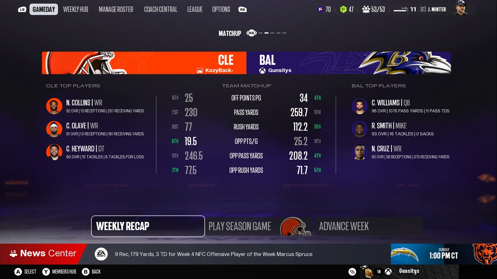

CLEVELAND AT BALTIMORE
The first meeting was a rout. The second comes with Cleveland trying to answer publicly and Baltimore trying to make the first victory look like a pattern rather than an opening weekend anomaly. A possible Jaycee Horn and Nasir Cruz matchup adds a layer, but this game begins with the line of scrimmage and Caleb Williams.
Baltimore beat Cleveland 44 to 7 in the opener. The Ravens are three and one. The Browns return with a defense that is allowing just 19.5 points per game through four weeks. Does that first result mean a single thing now?
It means Cleveland knows how bad it can get if it lets Baltimore dictate terms. That is real. It also means Cleveland has a tape full of everything that went wrong. A second division meeting is not a replay button. It is an adjustment game.
But excuse me! Forty four to seven is not some little mistake you correct with a nice speech at the facility. You were run off the field. Caleb Williams got whatever he wanted, Nasir Cruz was catching everything, and you could not get off the field. I need Cleveland to show me a different level of physicality.
What I want to watch is the run front. Cleveland is seventh against the run, allowing 77.5 yards per game. Baltimore is a top ten rushing offense. If the Browns hold the middle without borrowing an extra defender, then they can play their coverages the way they want.
And what about the matchup some people are asking for: Jaycee Horn and Nasir Cruz?
If we get it, that is a real test for both. Horn can challenge at the line, he understands leverage and he is going to make you finish through contact. But I am not going to sit here and promise the defensive coordinator gives us shadow coverage every snap. We need to see the game plan.
I want it. Because we know Cruz can have a giant day. We also know he can drop three balls and be mad at the world afterward. Now you get a veteran caliber corner potentially looking at you across the line. Show me you have learned something from Pittsburgh.
The most important matchup is still Caleb against the coverage rotation. Twenty two completions last week, no turnovers. That is the formula. And it is fine if Pierce or Andrews is the one who benefits. This is not a target competition.
Baltimore favored by seven and a half at home. Are they covering?
Ravens win. I am not predicting another thirty seven point humiliation. Give me Baltimore 27, Cleveland 17.
Baltimore 24, Cleveland 20. Closer than people want to admit. I would take the points with Cleveland.
Baltimore 28, Cleveland 21. I think Baltimore wins, but the margin is where this game gets interesting.